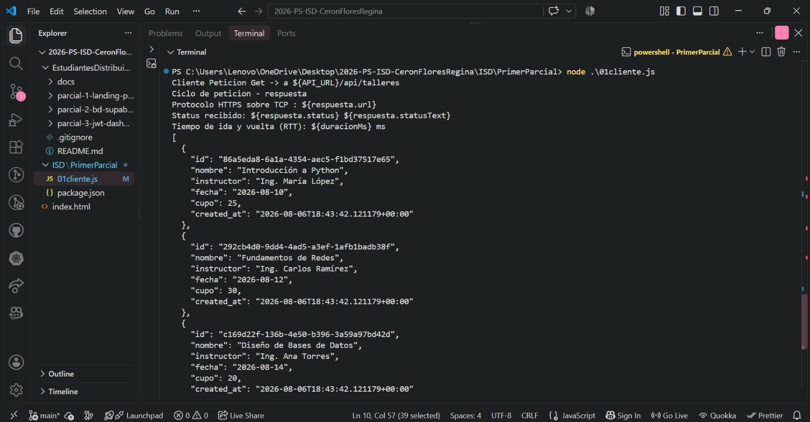

Al ejecutar el archivo 01cliente.js desde la terminal activando Node.js, se comenzó a mandar la petición a la API para poder obtener la información de los talleres. El programa realizó una petición GET, con la cual se solicita información al servidor.
Después de mandar la petición, el servidor recibió la solicitud y regresó la información que se estaba pidiendo. Al revisar la terminal pude ver que sí se obtuvo una respuesta. También observé que en una parte de la información apareció escrito ${respuesta.status} y no el resultado que debería mostrar. Esto se debe a que en esa parte del código se utilizaron comillas normales y no las comillas necesarias para que se pueda mostrar el valor de la variable.
Sí se conectó correctamente, ya que la petición sí llegó al servidor y se recibió una respuesta con los datos solicitados. Esto demuestra que el archivo 01cliente.js logró comunicarse correctamente con la API.
El detalle que se presentó solamente afecta la forma en la que se muestra una parte del resultado en la terminal, pero no afecta la conexión ni la información que se recibió del servidor.
Al recibir la respuesta de la API se obtuvieron los datos de tres talleres. De cada uno se obtuvo su nombre, el instructor que lo imparte, la fecha en la que se realizará y el número de personas que pueden asistir.
También se obtuvo información adicional de cada registro, como su identificador y la fecha en la que fue creado. En general, con la ejecución pude comprobar que la petición se realizó correctamente y que la API regresó la información de los talleres que se estaban solicitando.
